library(tidyverse)
theme_set(theme_bw(base_size = 16))15 Tests for patterns
This is a work in progress that is currently undergoing heavy technical editing and copy-editing
A range of techniques, most based on statistical tests, can be used to detect deviations from randomness in space and the choice of the methods depends on the question, the nature of the data and scale of observation. Usually, more than one test is applied for the same or different scales of interest depending on how the data are collected.
The several exploratory or inferential methods can be classified based on the spatial scale and type of data (binary, count, etc.) collected, but mainly if the spatial location of the unit is known (mapped) or not known (sampled). Following Madden et al. (2017b), two major groups can be formed. The first group uses intensively mapped data for which the location [x,y] of the sampling unit is known. Examples of data include binary data (plant is infected or not infected) in planting row, point pattern (spatial arrangements of points in a 2-D space) and quadrat data (grids are superimposed on point pattern data). The second group is the sparsely sampled data in the form of count or proportion (incidence) data for which the location is not known or, if known, not taken into account in the analysis.
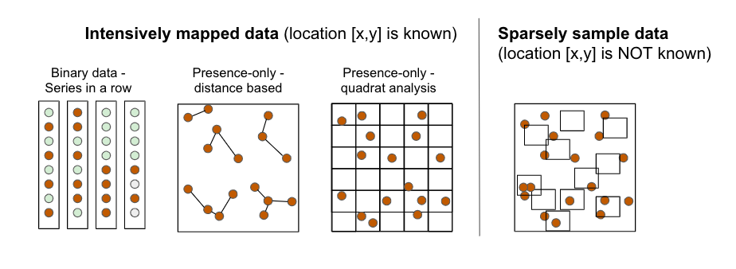
15.1 Intensively mapped
15.1.1 Binary data
In this situation the individual plants are mapped, meaning that their relative positions to one another are known. It is the case when a census is used to map presence/absence data. The status of each unit (usually a plant) is noted as a binary variable. The plant is either diseased (D or 1) or non-diseased or healthy (H or 0). Several statistical tests can be used to detect a deviation from randomness. The most commonly used tests are runs, doublets and join count.
15.1.1.1 Runs test
A run is defined as a succession of one or more diseased (D) or healthy (H) plants, which are followed and preceded by a plant of the other disease status or no plant at all. In the example below, we can count 13 runs.

There would be few runs if there is an aggregation of diseased or healthy plants and a large number of runs for a random mixing of diseased and healthy plants.
Let’s create a vector of binary (0 = non-diseased; 1 = diseased) data representing a crop row with 20 plants and assign it to y. For plotting purposes, we make a dataframe for more complete information.
y1 <- c(1,1,1,0,0,0,0,0,1,0,0,0,0,1,1,0,0,0,1,1)
x1 <- c(1:20) # position of each plant
z1 <- 1
row1 <- data.frame(x1, y1, z1) # create a dataframeWe can then visualize the series using ggplot and count the number of runs as 7, aided by the color used to identify a run.
row1 |>
ggplot(aes(x1, z1, label = x1, color = factor(y1))) +
geom_point(shape = 15, size = 7) +
theme_void() +
scale_x_continuous(breaks = max(z1)) +
scale_color_manual(values = c("gray70", "darkred")) +
geom_text(vjust = 0, nudge_y = 0.5) +
coord_fixed() +
ylim(-0.5, 2.5) +
theme(legend.position = "top") +
labs(color = "Status")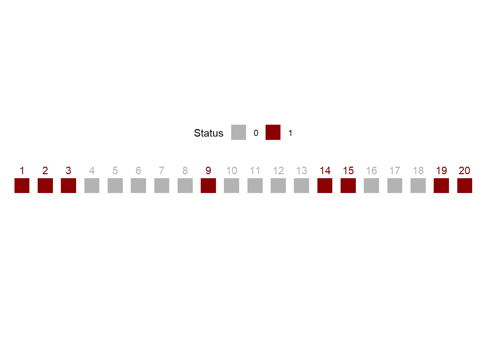
We can write a code in R and create a function named oruns.test() for the ordinary runs test.
oruns.test <- function(x) {
runs <- rle(x)
U <- length(runs$lengths)
N <- length(x)
m <- sum(x)
EU <- 1 + (2 * m * (N - m) / N)
sU <- sqrt((2 * m * (N - m) * (2 * m * (N - m) - N)) / (N ^ 2 * (N - 1)))
Z <- (U - EU) / sU
pvalue <- 2 * pnorm(abs(Z), lower.tail = FALSE)
cat(sprintf(
"There are %d runs. The number of expected runs is %.1f.\n",
U, EU
))
cat(sprintf(
"P-value: %.6f. Alternative hypothesis: non-randomness\n",
pvalue
))
}We can now run the test for the example series above.
oruns.test(row1$y1)[1] "There are 7 runs. The number of expected runs is 10.6 . P-value: 0.084166 . Alternative hypothesis: non-randomness"There are built-in functions in R packages that allow for running the ordinary runs test. Let’s load the packages and run the test. Note that the results of the RunsTest() of the DescTools package is the same as the one produced by our custom function.
library(DescTools)
r <- RunsTest(row1$y1)
r
Runs Test for Randomness
data: row1$y1
runs = 7, m = 12, n = 8, p-value = 0.09595
alternative hypothesis: true number of runs is not equal the expected number15.1.1.2 Doublets
Doublet analysis is used to compare the observed number or adjacent diseased plants, a doublet (DD or 11), to the number expected if the disease were randomly distributed in the field. If the observed number is greater than the expected number, contagion within the field is suspected.
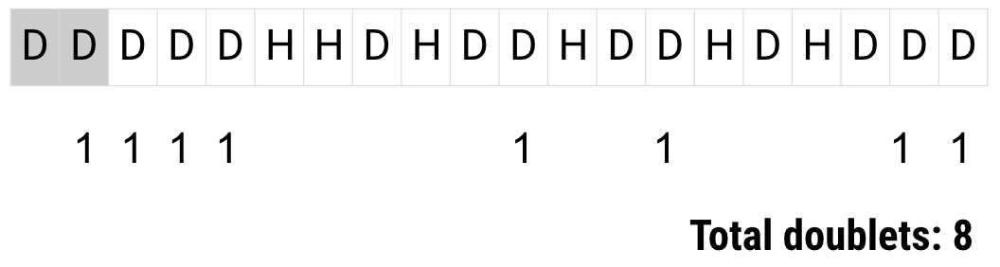
Let’s manually produce a code to execute the doublets test. To facilitate, we can create a function and name it doublets.test(). The only argument needed is the vector of binary data.
doublets.test <- function(x) {
doublets <- sum(x[-1] * x[-length(x)] == 1)
N <- length(x)
m <- sum(x)
EDb <- m * ((m - 1) / N)
SDb <- sqrt(EDb * (1 - (2 / N)))
ZDb <- (doublets - EDb) / SDb
pvalue <- 2 * pnorm(abs(ZDb), lower.tail = FALSE)
cat(sprintf(
"There are %d doublets. The number of expected doublets is %.1f.\n",
doublets, EDb
))
cat(sprintf(
"P-value: %.4f. Alternative hypothesis: non-randomness\n",
pvalue
))
}Now we can run the doublets test for the same sequence.
doublets.test(row1$y1)[1] "There are 4 doublets. The number of expected doublets is 2.8 . P-value: 0.4497 . Alternative hypothesis: non-randomness"15.1.1.3 Foci structure and dynamics
The Analysis of Foci Structure and Dynamics (AFSD), introduced by (Nelson 1996) and further expanded by (Laranjeira et al. 1998), was used in several studies on citrus diseases in Brazil. In this analysis, the data come from incidence maps where both the diseased and no-diseased trees are mapped in the 2D plane (Jesus Junior and Bassanezi 2004; Laranjeira et al. 2004).
Here is an example of an incidence map with four foci (adapted from (Laranjeira et al. 1998)). The data is organized in the wide format where the first column x is the index for the row and each column is the position of the plant within the row. The 0 and 1 represent the non-diseased and diseased plant, respectively.
foci <- tibble::tribble(
~x, ~`1`, ~`2`, ~`3`, ~`4`, ~`5`, ~`6`, ~`7`, ~`8`, ~`9`,
1, 0, 0, 0, 0, 0, 0, 0, 0, 0,
2, 1, 1, 1, 0, 0, 0, 0, 1, 0,
3, 1, 1, 1, 0, 0, 0, 1, 1, 1,
4, 0, 1, 1, 0, 0, 0, 0, 1, 0,
5, 0, 1, 1, 0, 0, 0, 0, 0, 0,
6, 0, 0, 0, 1, 0, 0, 0, 0, 0,
7, 0, 0, 0, 0, 0, 0, 0, 0, 0,
8, 0, 0, 0, 0, 0, 0, 0, 0, 0,
9, 0, 0, 0, 0, 0, 1, 0, 1, 0,
10, 0, 0, 0, 0, 0, 0, 1, 0, 0,
11, 0, 1, 0, 0, 0, 1, 0, 1, 0,
12, 0, 0, 0, 0, 0, 0, 0, 0, 0
)Since the data frame is in the wide format, we need to reshape it to the long format using pivot_longer function of the tidyr package before plotting using ggplot2 package.
library(tidyr)
foci2 <- foci |>
pivot_longer(2:10, names_to = "y", values_to = "i")
DT::datatable(foci2)Now we can make the plot.
library(ggplot2)
foci2 |>
ggplot(aes(x, y, fill = factor(i)))+
geom_tile(color = "black")+
scale_fill_manual(values = c("grey96", "grey20"))+
theme_void()+
coord_fixed()+
theme(legend.position = "none")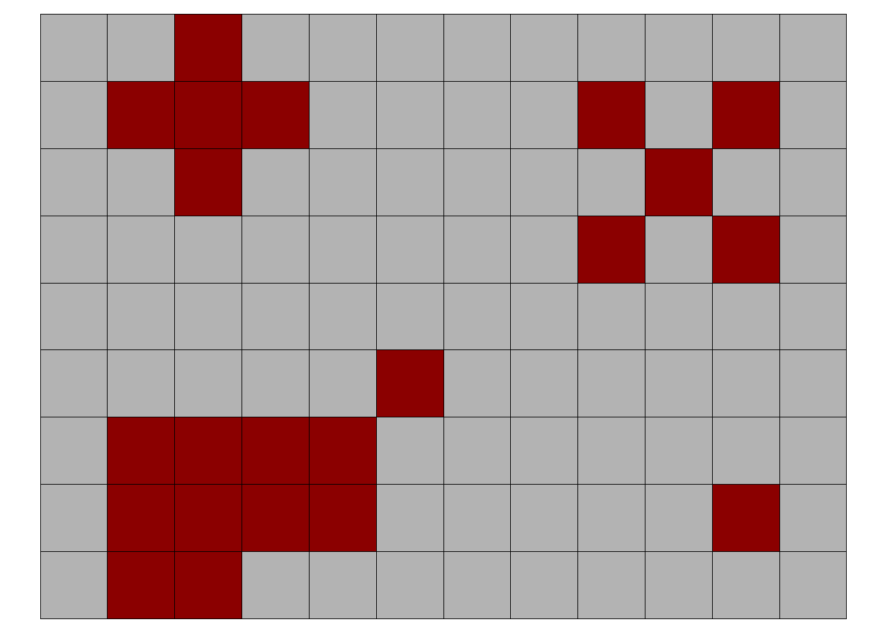
In the above plot, the upper left focus is composed of four diseased plants with a pattern of vertical and horizontal proximity to the central unit (or the Rook’s case). The upper right focus, also with four diseased plants denotes a pattern of longitudinal proximity to the central unit (or the Bishop’s case). The lower left focus is composed of 11 diseased plants with 4 rows and 6 columns occupied by the focus; the shape index of the focus (SIF) is 1.25 and the compactness index of the focus (CIF) is 0.55. The lower right is a single-unit focus.
In this analysis, several statistics can be summarized, both at the single focus and averaging across all foci in the area, including:
Number of foci (NF) and number of single focus (NSF)
NF and NSF can be normalized to 1000 plants as NF1000 and NSF1000
Number of plants in each focus i (NPFi)
Maximum number of rows of the focus i (rfi) and maximum number of columns of the focus i (cfi)
Mean shape index of foci (meanSIF = [∑(fri / cfi)]/NF), where SIF values equal to 1.0 indicate isodiametrical foci; values greater than 1.0 indicate foci with greater length in the direction between the planting rows and values less than 1 indicate foci with greater length in the direction of the planting row.
Mean compactness index of foci (meanCIF = [∑(NPFi/rfi*cfi)]/NF), where CIF values close to 1.0 indicate a more compact foci, that is, greater aggregation and proximity among all the plants belonging to the focus
We can obtain these foci statistics using the AFSD function of the r4pde package. Let’s calculate for the foci2 dataset already loaded, but first we need to check whether all variables are numeric or integer.
if (!"r4pde" %in% rownames(installed.packages())) {
if (!require("devtools")) {
install.packages("devtools")
}
devtools::install_github("emdelponte/r4pde") # Replace 'username' with the GitHub username
}
library(r4pde)
str(foci2) # y was not numerictibble [108 × 3] (S3: tbl_df/tbl/data.frame)
$ x: num [1:108] 1 1 1 1 1 1 1 1 1 2 ...
$ y: chr [1:108] "1" "2" "3" "4" ...
$ i: num [1:108] 0 0 0 0 0 0 0 0 0 1 ...foci2$y <- as.integer(foci2$y) # transform to numeric
result_foci <- AFSD(foci2)The AFSD function returns a list of three data frames. The first is a summary statistics for the data frame in analysis.
knitr::kable(result_foci[[1]])| stats | value |
|---|---|
| NF | 4.0000000 |
| NF1000 | 37.0370370 |
| NSF | 1.0000000 |
| NSF1000 | 9.2592593 |
| DIS_INC | 0.2037037 |
| mean_SIF | 1.0625000 |
| mean_CIF | 0.6652778 |
The second object in the list is a data frame with statistics at the focus level, including the number of rows and columns occupied by the focus and the two indices for each focus: shape and compactness.
knitr::kable(result_foci[[2]])| focus_id | size | rows | cols | SIF | CIF |
|---|---|---|---|---|---|
| 1 | 11 | 4 | 5 | 0.8 | 0.5500000 |
| 2 | 5 | 3 | 3 | 1.0 | 0.5555556 |
| 3 | 5 | 3 | 3 | 1.0 | 0.5555556 |
| 4 | 1 | 1 | 1 | 1.0 | 1.0000000 |
The third object is the original data frame amended with the id for each focus which can be plotted using the plot_AFSD() function.
foci_data <- result_foci[[3]]
DT::datatable(foci_data)The plot shows the ID for each focus.
plot_AFSD(foci_data)+
theme_bw()
We will now analyse a real data set from the epiphy package. The data is the incidence of tomato spotted wilt virus (TSWV) disease in field trials. There are two years in the dataset. We will work with the data from 1928 when 6 assessments were made in time. We will first work with time 1.
library(epiphy)
tswv_1928 <- tomato_tswv$field_1928
df1 <- tswv_1928 |>
filter(t == 1) |>
select(x, y, i)Follows the incidence map of the area at time 1.
df1 |>
ggplot(aes(x, y, fill = factor(i)))+
geom_tile(color = "black")+
theme_void()+
scale_fill_grey(start = 0.8, end = 0.2)+
coord_fixed()+
theme(legend.position = "none")
Now we can run the AFSD function and obtain the statistics.
result_df1 <- AFSD(df1)
knitr::kable(result_df1[[1]])| stats | value |
|---|---|
| NF | 33.0000000 |
| NF1000 | 17.8571429 |
| NSF | 8.0000000 |
| NSF1000 | 4.3290043 |
| DIS_INC | 0.0784632 |
| mean_SIF | 1.1482323 |
| mean_CIF | 0.7977633 |
This analysis is usually applied to multiple maps and the statistics are visually related to the incidence in the area in a scatter plot. Let’s calculate the statistics for all five times of the data frame where we will keep now the time variable in the dataframe and split it by time before applying the function. We can do it using the map function of the purrr package.
library(purrr)
df_all <- tomato_tswv$field_1928
# Split the dataframe by 'time'
df_split <- split(df_all, df_all$t)
# Apply the AFSD function to each split dataframe
results <- map(df_split, AFSD)We can check the summary results for time 2 and time 3.
time2 <- data.frame(results[[2]][1])
knitr::kable(time2)| stats | value |
|---|---|
| NF | 2.0000000 |
| NF1000 | 1.0822511 |
| NSF | 0.0000000 |
| NSF1000 | 0.0000000 |
| DIS_INC | 0.2364719 |
| mean_SIF | 1.7121212 |
| mean_CIF | 1.1352814 |
time3 <- data.frame(results[[3]][1])
knitr::kable(time3)| stats | value |
|---|---|
| NF | 1.0000000 |
| NF1000 | 0.5411255 |
| NSF | 0.0000000 |
| NSF1000 | 0.0000000 |
| DIS_INC | 0.4085498 |
| mean_SIF | 0.4242424 |
| mean_CIF | 1.6341991 |
# Plot the results to see the two foci in time 1
plot_AFSD(results[[1]][[3]])+
theme_void()+
coord_fixed()
# Plot time 2
plot_AFSD(results[[2]][[3]])+
theme_void()+
coord_fixed()
15.1.1.4 Join count
In this analysis, two adjacent plants may be classified by the type of join that links them: D-D, H-H or H-D. The orientation(s) of interest (along rows, across rows, diagonally, or a a combination o these) should be specified in the test. The number of joins of the specified type in the orientation(s) of interest is then counted. The question is whether the observed join-count is large (or small) relative to that expected for a random pattern. The join-count statistics provides a basic measure of spatial autocorrelation.
In R, we can use the join.count() function of the spdep package to perform a joint count test. First, we need to create the series of binary data from top to bottom and left to right. The data are shown in Fig. 9.13 in page 260 of the book chapter on spatial analysis (Madden et al. 2017a). In the example, there are 5 rows and 5 columns. This will be informed later to run the test.
S2 <- c(1,0,1,1,0,
1,1,0,0,0,
1,0,1,0,0,
1,0,0,1,0,
0,1,0,1,1)Visualize the two-dimensional array:
# Convert to raster
mapS2 <- terra::rast(matrix(S2, 5 , 5))
# Convert to data frame
mapS3 <- terra::as.data.frame(mapS2, xy = TRUE)
mapS3 |>
ggplot(aes(x, y, label = lyr.1, fill = factor(lyr.1))) +
geom_tile(color = "white", size = 0.5) +
theme_void() +
labs(fill = "Status") +
scale_fill_manual(values = c("gray70", "darkred"))+
theme(legend.position = "top")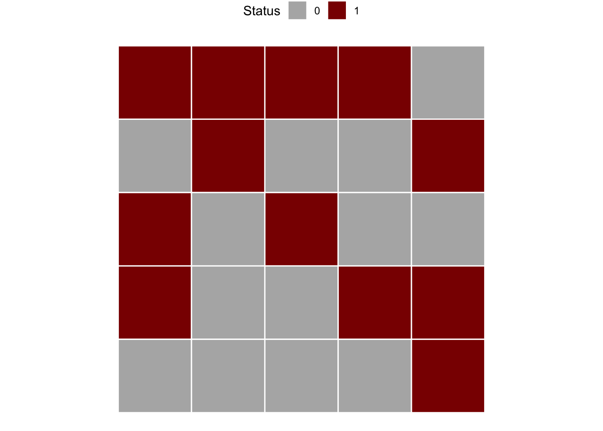
After loading the library, we need to generate a list of neighbors (nb) for a grid of cells. This is performed with the cell2nb() function by informing the number of rows and columns. The argument rook means shared edge, but it could be the queen, for shared edge or vertex. We can use the default.
library(spdep)
nb <- cell2nb(nrow = 5,
ncol = 5,
type = "rook")The joincount.test() function runs the BB join count test for spatial autocorrelation. The method uses a spatial weights matrix in weights list form for testing whether same-status joins occur more frequently than would be expected if the zones were labelled in a spatially random way. We need to inform the sequence as factor and the nb object we created previously.
joincount.test(factor(S2),
nb2listw(nb))
Join count test under nonfree sampling
data: factor(S2)
weights: nb2listw(nb)
Std. deviate for 0 = -0.58266, p-value = 0.7199
alternative hypothesis: greater
sample estimates:
Same colour statistic Expectation Variance
2.9583333 3.2500000 0.2505797
Join count test under nonfree sampling
data: factor(S2)
weights: nb2listw(nb)
Std. deviate for 1 = -0.66841, p-value = 0.7481
alternative hypothesis: greater
sample estimates:
Same colour statistic Expectation Variance
2.4166667 2.7500000 0.2486957 The function returns a list with a class for each of the status (in this case 0 and 1) with several components. We should look at the P-value. The alternative hypothesis (greater) is that the same status joins occur more frequently than expected if they were labelled in a spatial random way. In this case, we do not reject the null hypothesis of randomness.
We can run the ordinary runs and doublets tests, which only considers the adjacent neighbor, for the same series and compare the results.
oruns.test(S2)There are 17 runs. The number of expected runs is 13.5.
P-value: 0.149673. Alternative hypothesis: non-randomnessdoublets.test(S2)There are 3 doublets. The number of expected doublets is 5.3.
P-value: 0.3009. Alternative hypothesis: non-randomnessLet’s repeat the procedure using the second array of data shown in the book chapter, for which the result is different. In this case, there is evidence to reject the null hypothesis, indicating aggregation of plants.
S3 <- c(1,1,1,0,0,
1,1,1,0,0,
1,1,1,0,0,
1,1,1,0,0,
0,0,0,0,0)
joincount.test(factor(S3),
nb2listw(nb))
Join count test under nonfree sampling
data: factor(S3)
weights: nb2listw(nb)
Std. deviate for 0 = 4.2451, p-value = 1.093e-05
alternative hypothesis: greater
sample estimates:
Same colour statistic Expectation Variance
5.3750000 3.2500000 0.2505797
Join count test under nonfree sampling
data: factor(S3)
weights: nb2listw(nb)
Std. deviate for 1 = 4.5953, p-value = 2.16e-06
alternative hypothesis: greater
sample estimates:
Same colour statistic Expectation Variance
5.0416667 2.7500000 0.2486957 oruns.test(S3)There are 8 runs. The number of expected runs is 13.5.
P-value: 0.024904. Alternative hypothesis: non-randomnessWe can apply these tests for a real example epidemic data provided by the epiphy R package (Gigot 2018). Let’s work with part of the intensively mapped data on the incidence of tomato spotted wilt virus (TSWV) disease in field trials reported by Cochran (1936) and Bald (1937). First, we need to load the library and then assign one dataframe (the dataset has two dataframes) of the dataset tomato_tswv to a new dataframe called tswv_1929.
library(epiphy)
tswv_1929 <- tomato_tswv$field_1929
tswv_1929 |> head(10) x y t i n
1 1 1 1 0 1
2 1 2 1 1 1
3 1 3 1 0 1
4 1 4 1 1 1
5 1 5 1 0 1
6 1 6 1 0 1
7 1 7 1 0 1
8 1 8 1 0 1
9 1 9 1 1 1
10 1 10 1 0 1The inspection of the first 10 rows of the dataframe shows five variables where x and y are spatial grid coordinates, t is assessment time, i is the status of the plant (0 = healthy, 1 = diseased) and n is the sampling unit size (here all one). Let’s visualize these data for each sampling time.
tswv_1929 |>
ggplot(aes(x, y, fill = factor(i))) +
geom_tile() +
coord_fixed() +
scale_fill_manual(values = c("gray70", "darkred")) +
facet_wrap( ~ t) +
labs(fill = "Status")+
theme(legend.position = "top")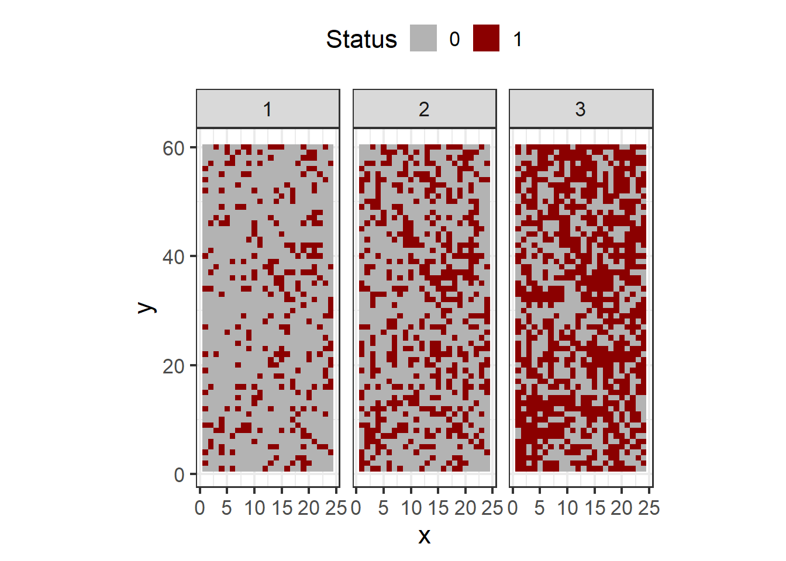
Check the number of rows (y) and columns (x) for further preparing the neighbor object for the join count statistics.
tswv_1929 |>
dplyr::select(x, y) |>
summary() x y
Min. : 1.00 Min. : 1.00
1st Qu.: 6.75 1st Qu.:15.75
Median :12.50 Median :30.50
Mean :12.50 Mean :30.50
3rd Qu.:18.25 3rd Qu.:45.25
Max. :24.00 Max. :60.00 There are 60 rows and 24 columns.
# Neighbor grid
nb1 <- cell2nb(nrow = 60,
ncol = 24,
type = "rook")
# Pull the binary sequence of time 1
S1 <- tswv_1929 |>
filter(t == "1") |>
pull(i)
joincount.test(factor(S1),
nb2listw(nb1))
Join count test under nonfree sampling
data: factor(S1)
weights: nb2listw(nb1)
Std. deviate for 0 = -0.28351, p-value = 0.6116
alternative hypothesis: greater
sample estimates:
Same colour statistic Expectation Variance
482.000000 482.578874 4.169132
Join count test under nonfree sampling
data: factor(S1)
weights: nb2listw(nb1)
Std. deviate for 1 = -0.059497, p-value = 0.5237
alternative hypothesis: greater
sample estimates:
Same colour statistic Expectation Variance
23.458333 23.578874 4.104614 We can apply the join count test for time 2 and time 3. Results show that the pattern changes from random to aggregate over time.
# Pull the binary sequence of time 1
S2 <- tswv_1929 |>
filter(t == "2") |>
pull(i)
joincount.test(factor(S2),
nb2listw(nb1))
Join count test under nonfree sampling
data: factor(S2)
weights: nb2listw(nb1)
Std. deviate for 0 = 0.35872, p-value = 0.3599
alternative hypothesis: greater
sample estimates:
Same colour statistic Expectation Variance
317.000000 315.900625 9.392312
Join count test under nonfree sampling
data: factor(S2)
weights: nb2listw(nb1)
Std. deviate for 1 = 0.34604, p-value = 0.3647
alternative hypothesis: greater
sample estimates:
Same colour statistic Expectation Variance
82.958333 81.900625 9.342754 # Pull the binary sequence of time 1
S3 <- tswv_1929 |>
filter(t == "3") |>
pull(i)
joincount.test(factor(S3),
nb2listw(nb1))
Join count test under nonfree sampling
data: factor(S3)
weights: nb2listw(nb1)
Std. deviate for 0 = 1.8541, p-value = 0.03186
alternative hypothesis: greater
sample estimates:
Same colour statistic Expectation Variance
136.12500 129.92773 11.17243
Join count test under nonfree sampling
data: factor(S3)
weights: nb2listw(nb1)
Std. deviate for 1 = 1.7275, p-value = 0.04204
alternative hypothesis: greater
sample estimates:
Same colour statistic Expectation Variance
243.70833 237.92773 11.19743 15.1.2 Point pattern analysis
Point pattern analysis is the study of the spatial arrangements of points in a 2-D space. The easiest way to visualize a 2-D point pattern is to produce a map of the locations, which is simply a scatterplot but with the provision that the axes are equally scaled.
Let’s work with a real epidemic data where the presence of banana plants displaying the symptoms of Fusarium wilt was determined in fields across several regions in Brazil (Heck et al. 2021). On each field, the location of each symptomatic plant was geolocated using a GPS together with the coordinates of the four corners of the field. Let’s load the data from the web and assign them to a data frame called fw (Fusarium wilt).
fw <- read_csv("https://raw.githubusercontent.com/emdelponte/epidemiology-R/main/data/fusarium_banana.csv")Because we using a coordinate system, we need to convert the data to meters.
#|warning: false
# Convert to meters
library(sp)
coordinates(fw) <- c("lon", "lat")
proj4string(fw) <- CRS("+proj=longlat +datum=WGS84")
fw <- spTransform(fw, CRS("+proj=utm +zone=22 ellps=WGS84"))
fw <- data.frame(fw)As shown above, the fw dataframe has five variables. The marker indicates weather the point is a plant or one of the four limits of the polygon. The field variable is the number of the field. Let’s produce 2-D map.
fw %>%
ggplot(aes(lat, lon, color = marker))+
geom_polygon(data = fw, aes(lat, lon, group = marker), fill = "white", color="grey")+
geom_point()+
scale_color_manual(values = c("black", NA))+
coord_map()+
coord_flip()+
theme_void()+
theme(legend.position = "none")+
labs (title = "Fusarium wilt incidence map",
subtitle = "Field 11",
x = "Latitude",
y = "Longitude",
caption = "Source: Heck et al. (2021)")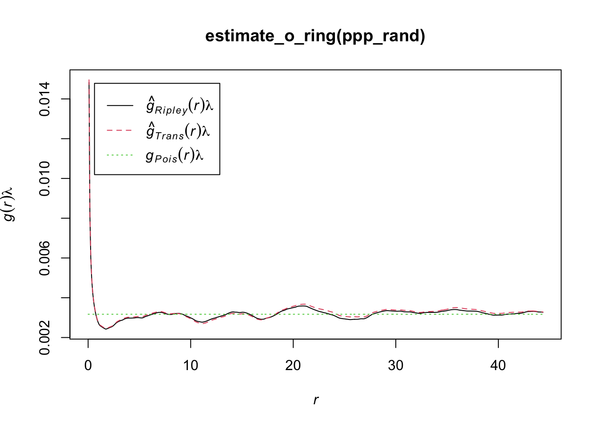
15.1.2.1 Quadrat based
Quadrat count analysis
library(spatstat)
### Create window
window_fw <- ripras(fw$lon, fw$lat)
# create the point pattern object
ppp_fw <- ppp(fw$lon, fw$lat, window_fw)
plot(ppp_fw)
## Quadrat count 10 x 10
qq <- quadratcount(ppp_fw,8,8, keepempty=TRUE)
# plot the quadrat count
plot(qq)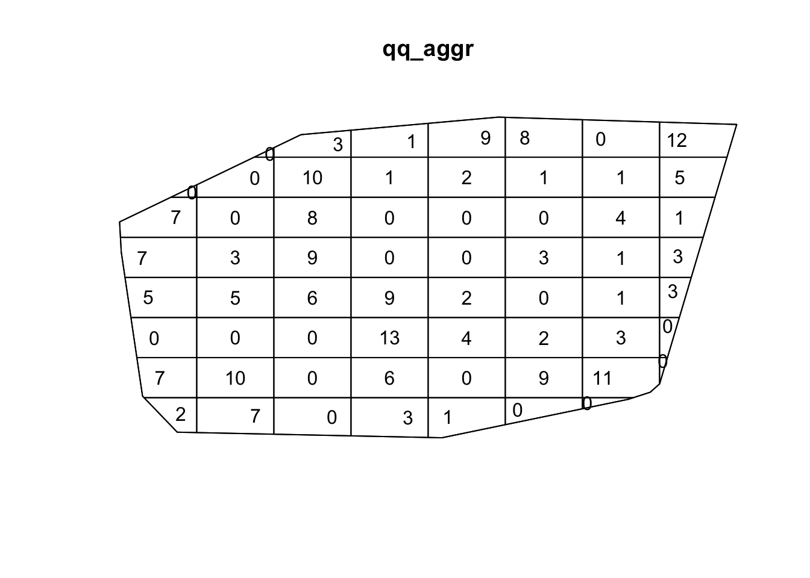
# Quadrat test
qt <- quadrat.test(qq, alternative="clustered", method="M")
qt
Conditional Monte Carlo test of CSR using quadrat counts
Test statistic: Pearson X2 statistic
data:
X2 = 132.76, p-value = 0.001
alternative hypothesis: clustered
Quadrats: 60 tiles (irregular windows)15.1.2.2 Spatial KS test
Performs a test of goodness-of-fit test of the uniform Poisson point process (Complete Spatial Randomness, CSR) for the dataset.The test is performed by comparing the observed distribution of the values of a spatial covariate at the data points, and the predicted distribution of the same covariate under the model, using a classical goodness-of-fit test Baddeley et al. (2005). Thus, we must nominate a spatial covariate for this test. In the case below we nominate x, y or x and y as covariate.
# y as covariate
ks_y <- cdf.test(ppp_fw, test="ks", "y", jitter=FALSE)
ks_y
Spatial Kolmogorov-Smirnov test of CSR in two dimensions
data: covariate 'y' evaluated at points of 'ppp_fw'
and transformed to uniform distribution under CSR
D = 0.056002, p-value = 0.6862
alternative hypothesis: two-sidedplot(ks_y)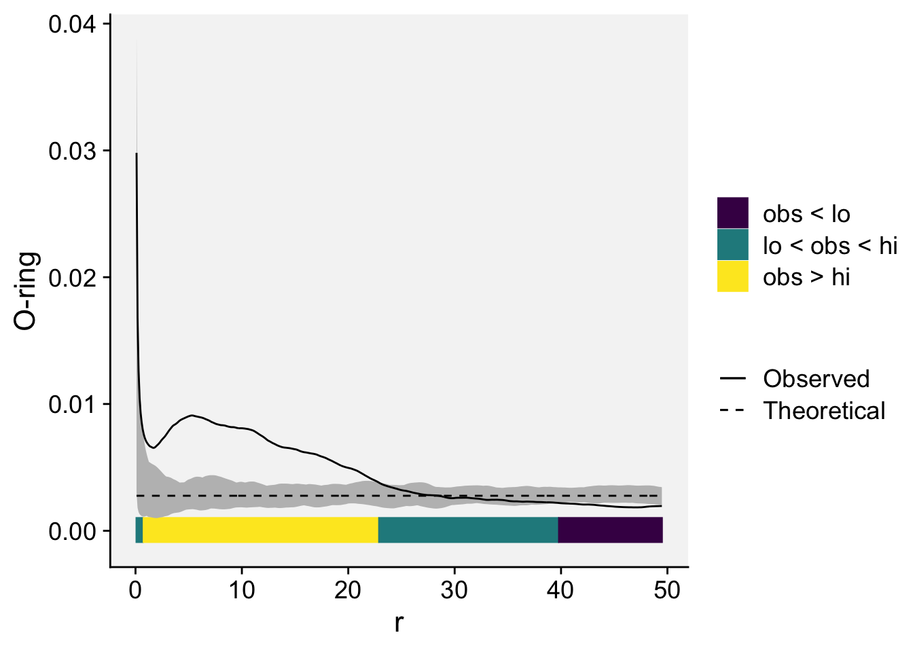
# x as covariate
ks_x <- cdf.test(ppp_fw, test="ks", "x", jitter=FALSE)
ks_x
Spatial Kolmogorov-Smirnov test of CSR in two dimensions
data: covariate 'x' evaluated at points of 'ppp_fw'
and transformed to uniform distribution under CSR
D = 0.10115, p-value = 0.07118
alternative hypothesis: two-sidedplot(ks_x)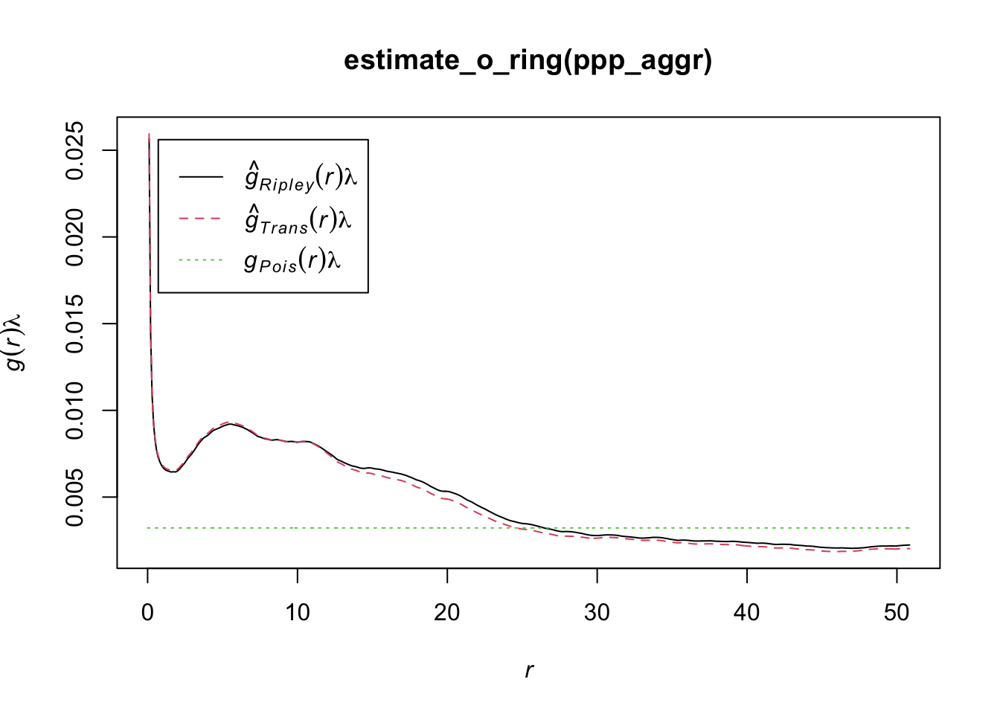
# x and y as covariates
fun <- function(x,y){2* x + y}
ks_xy <- cdf.test(ppp_fw, test="ks", fun, jitter=FALSE)
ks_xy
Spatial Kolmogorov-Smirnov test of CSR in two dimensions
data: covariate 'fun' evaluated at points of 'ppp_fw'
and transformed to uniform distribution under CSR
D = 0.093067, p-value = 0.1188
alternative hypothesis: two-sidedplot(ks_xy)
As shown above, we do not have sufficient evidence to reject the null hypothesis of complete spatial randomness.
15.1.2.3 Distance based
A spatial point process is a set of irregularly distributed locations within a defined region which are assumed to have been generated by some form of stochastic mechanism.
The K function, a.k.a. Ripley’s K-function, of a stationary point process X is defined so that the lambda K(r) equals the expected number of additional random points within a distance r of a typical random point of X. Lambda is the intensity of the process, or the expected number of point of X per unit area. Ripley’s K checks the density of diseased units in each area by the variance as a function of radial distances (r) from the diseased unit, hence K(r). If the spatial localization of a diseased unit is independent, the process is random in space.
Let’s use the Kest function of the spatstat package to obtain K(r).
k <- Kest(ppp_fw)
plot(k)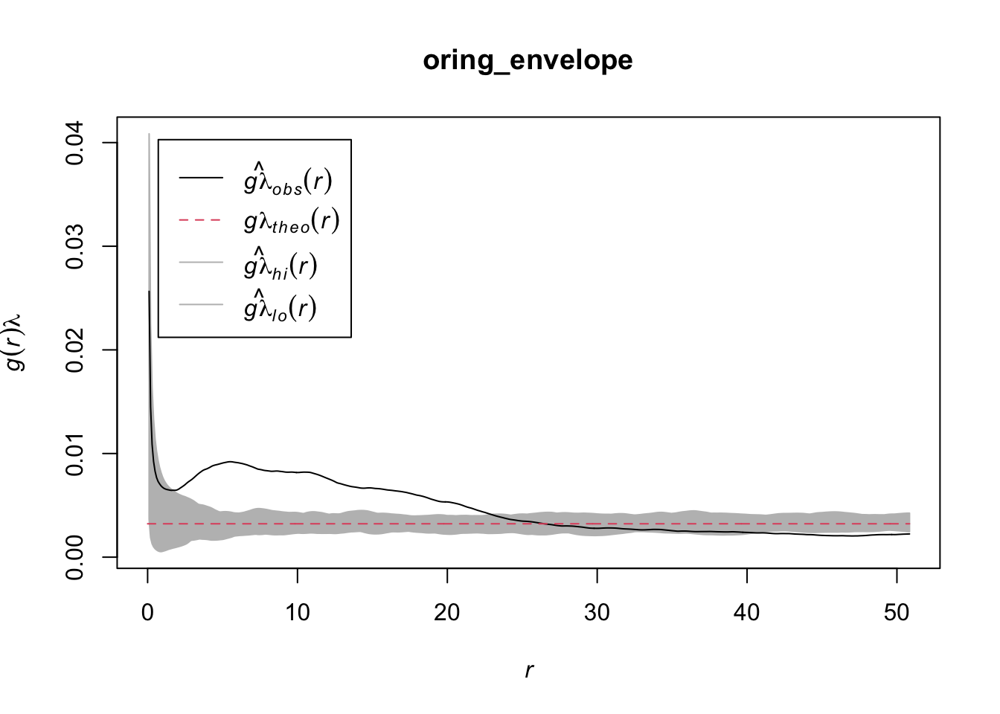
The envelope function performs simulations and computes envelopes of a summary statistic based on the simulations. The envelope can be used to assess the goodness-of-fit of a point process model to point pattern data (Baddeley et al. 2014). Let’s simulate the envelope and plot the values using ggplot. Because observed K(r) (solid line) lied outside the simulation envelope, aggregation was detected.
ke <- envelope(ppp_fw, fun = Kest)Generating 99 simulations of CSR ...
1, 2, 3, 4, 5, 6, 7, 8, 9, 10, 11, 12, 13, 14, 15, 16, 17, 18, 19, 20, 21, 22, 23, 24, 25, 26, 27, 28, 29, 30, 31, 32, 33, 34, 35, 36, 37, 38, 39, 40,
41, 42, 43, 44, 45, 46, 47, 48, 49, 50, 51, 52, 53, 54, 55, 56, 57, 58, 59, 60, 61, 62, 63, 64, 65, 66, 67, 68, 69, 70, 71, 72, 73, 74, 75, 76, 77, 78, 79, 80,
81, 82, 83, 84, 85, 86, 87, 88, 89, 90, 91, 92, 93, 94, 95, 96, 97, 98, 99.
Done.data.frame(ke) |>
ggplot(aes(r, theo))+
geom_line(linetype =2)+
geom_line(aes(r, obs))+
geom_ribbon(aes(ymin = lo, ymax = hi),
fill = "steelblue", alpha = 0.5)+
labs(y = "K(r)", x = "r")+
theme_bw(base_size = 16)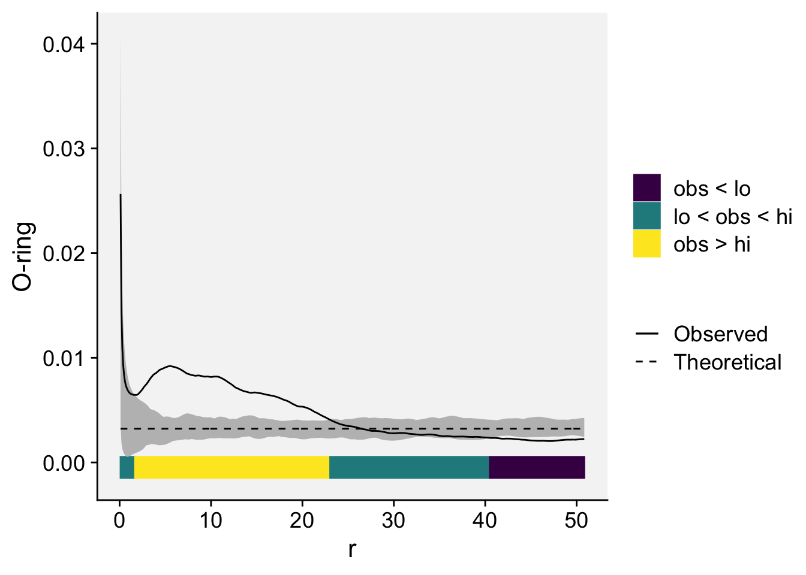
mad.test performs the ‘global’ or ‘Maximum Absolute Deviation’ test described by Ripley (1977, 1981). See (Baddeley et al. 2014). This performs hypothesis tests for goodness-of-fit of a point pattern dataset to a point process model, based on Monte Carlo simulation from the model.
# Maximum absolute deviation test
mad.test(ppp_fw, Kest)Generating 99 simulations of CSR ...
1, 2, 3, 4, 5, 6, 7, 8, 9, 10, 11, 12, 13, 14, 15, 16, 17, 18, 19, 20, 21, 22, 23, 24, 25, 26, 27, 28, 29, 30, 31, 32, 33, 34, 35, 36, 37, 38, 39, 40,
41, 42, 43, 44, 45, 46, 47, 48, 49, 50, 51, 52, 53, 54, 55, 56, 57, 58, 59, 60, 61, 62, 63, 64, 65, 66, 67, 68, 69, 70, 71, 72, 73, 74, 75, 76, 77, 78, 79, 80,
81, 82, 83, 84, 85, 86, 87, 88, 89, 90, 91, 92, 93, 94, 95, 96, 97, 98, 99.
Done.
Maximum absolute deviation test of CSR
Monte Carlo test based on 99 simulations
Summary function: K(r)
Reference function: theoretical
Alternative: two.sided
Interval of distance values: [0, 41.7189302890329]
Test statistic: Maximum absolute deviation
Deviation = observed minus theoretical
data: ppp_fw
mad = 433.73, rank = 2, p-value = 0.0215.1.3 Grouped data
If the data are intensively mapped, meaning that the spatial locations of the sampling units are known, we are not limited to analyse presence/absence (incidence) only data at the unit level. The sampling units may be quadrats where the total number of plants and the number of disease plants (or number of pathogen propagules) are known. Alternatively, it could be a continuous measure of severity. The question here, similar to the previous section, is whether a plant being diseased makes it more (or less) likely that neighboring plants will be diseased. If that is the case, diseased plants are exhibiting spatial autocorrelation. The most common methods are autocorrelation (known as Moran’s I), semivariance and SADIE (an alternative approach to autocorrelation.)
15.1.3.1 Autocorrelation
Spatial autocorrelation analysis provides a quantitative assessment of whether a large value of disease intensity in a sampling unit makes it more (positive autocorrelation) or less (negative auto- correlation) likely that neighboring sampling units tend to have a large value of disease intensity (Madden et al. 2017a).
We will illustrate the method by reproducing the example provided in page 264 of the chapter on spatial analysis (Madden et al. 2017a), which was extracted from table 11.3 of Campbell and Madden. L. (1990). The data represent a single transect with the number of Macrophomia phaseolina propagules per 10 g air-dry soil recorded in 16 contiguous quadrats across a field.
mp <- data.frame(
i = c(1:16),
y = c(41, 60, 81, 22, 8, 20, 28, 2, 0, 2, 2, 8, 0, 43, 61, 50)
)
mp i y
1 1 41
2 2 60
3 3 81
4 4 22
5 5 8
6 6 20
7 7 28
8 8 2
9 9 0
10 10 2
11 11 2
12 12 8
13 13 0
14 14 43
15 15 61
16 16 50We can produce a plot to visualize the number of propagules across the transect.
mp |>
ggplot(aes(i, y)) +
geom_col(fill = "darkred") +
labs(
x = "Relative position within a transect",
y = "Number of propagules",
caption = "Source: Campbell and Madden (1990)"
)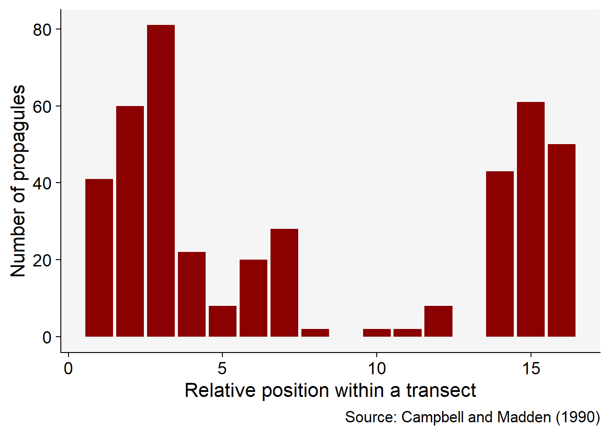
To calculate the autocorrelation coefficient in R, we can use the ac() function of the tseries package.
library(tseries)
ac_mp <- acf(mp$y, lag = 5, pl = FALSE)
ac_mp
Autocorrelations of series 'mp$y', by lag
0 1 2 3 4 5
1.000 0.586 0.126 -0.033 -0.017 -0.181 Let’s store the results in a data frame to facilitate visualization.
ac_mp_dat <- data.frame(index = ac_mp$lag, ac_mp$acf)
ac_mp_dat index ac_mp.acf
1 0 1.00000000
2 1 0.58579374
3 2 0.12636306
4 3 -0.03307249
5 4 -0.01701392
6 5 -0.18092810And now the plot known as autocorrelogram.
ac_mp_dat |>
ggplot(aes(index, ac_mp.acf, label = round(ac_mp.acf, 3))) +
geom_col(fill = "darkred") +
geom_text(vjust = 0, nudge_y = 0.05) +
scale_x_continuous(n.breaks = 6) +
geom_hline(yintercept = 0) +
labs(x = "Distance lag", y = "Autocorrelation coefficient")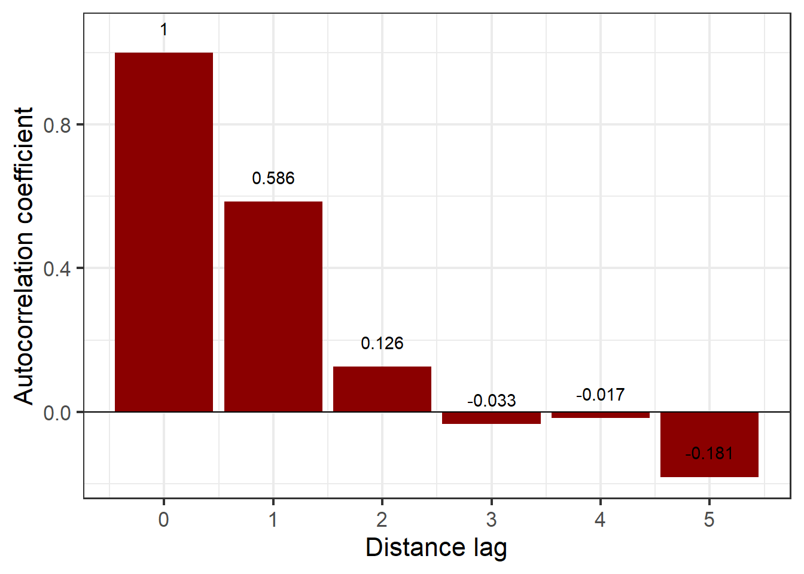
The values we obtained here are not the same but quite close to the values reported in Madden et al. (2017b). For the transect data, the calculated coefficients in the book example for lags 1, 2 and 3 are 0.625, 0.144, and - 0.041. The conclusion is the same, the smaller the distance between sampling units, the stronger is the correlation between the count values.
The method above is usually referred to Moran’s I (Moran 1950). Let’s use another example dataset from the book to calculate the Moran’s I in R. The data is shown in page 269 of the book. The data represent the number of diseased plants per quadrat (out of a total of 100 plants in each) in 144 quadrats. It was based on an epidemic generated using the stochastic simulator of Xu and Madden (2004). The data is stored in a CSV file.
epi <- read_csv("https://raw.githubusercontent.com/emdelponte/epidemiology-R/main/data/xu-madden-simulated.csv")
epi1 <- epi |>
pivot_longer(2:13,
names_to = "y",
values_to = "n") |>
pull(n)Using moran() function of the spdep R package.
set.seed(100)
library(spdep)The cell2nb() function creates the neighbor list with 12 rows and 12 columns, which is how the 144 quadrats are arranged.
nb <- cell2nb(12, 12, type = "queen", torus = FALSE)The nb2listw() function supplements a neighbors list with spatial weights for the chosen coding scheme. We use the default W, which is the row standardized (sums over all links to n). We then create the col.W neighbor list.
col.W <- nb2listw(nb, style = "W")The Moran’s I statistic is given by the moran() function
moran(x = epi1, # numeric vector
listw = col.W, # the nb list
n = 12, # number of zones
S0 = Szero(col.W)) # global sum of weights$I
[1] 0.05818595
$K
[1] 2.878088The Moran’s test for spatial autocorrelation uses spatial weights matrix in weights list form.
moran.test(x = epi1,
listw = col.W)
Moran I test under randomisation
data: epi1
weights: col.W
Moran I statistic standard deviate = 15.919, p-value < 2.2e-16
alternative hypothesis: greater
sample estimates:
Moran I statistic Expectation Variance
0.698231416 -0.006993007 0.001962596 correl_I <- sp.correlogram(nb, epi1,
order = 10,
method = "I",
zero.policy = TRUE)We can generate a correlogram using the output of the sp.correlogram() function. Note that the figure below is very similar to the one shown in Figure 91.5 in page 269 of the book chapter (Madden et al. 2017a). Let’s store the results in a dataframe.
df_correl <- data.frame(correl_I$res) |>
mutate(lag = c(1:10))
# Show the spatial autocorrelation for 10 distance lags
round(df_correl$X1,3) [1] 0.698 0.340 0.086 -0.002 -0.009 -0.024 -0.090 -0.180 -0.217 -0.124Then, we can generate the plot using ggplot.
df_correl |>
ggplot(aes(lag, X1)) +
geom_col(fill = "darkred") +
scale_x_continuous(n.breaks = 10) +
labs(x = "Distance lag", y = "Spatial autocorrelation")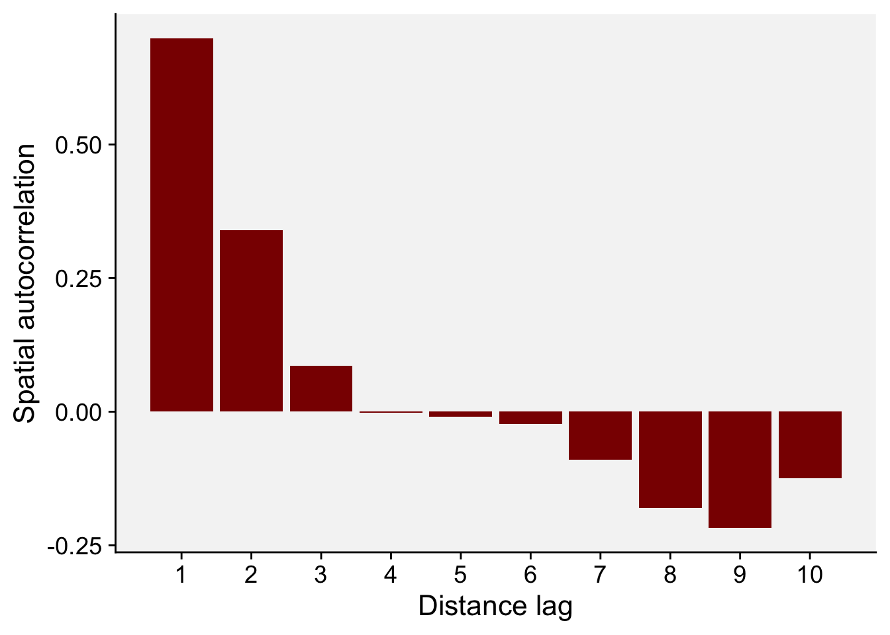
15.1.3.2 Semivariance
Semi-variance is a key quantity in geostatistics. This differs from spatial autocorrelation because distances are usually measured in discrete spatial lags. The semi-variance can be defined as half the variance of the differences between all possible points spaced a constant distance apart.
The semi-variance at a distance d = 0 will be zero, because there are no differences between points that are compared to themselves. However, as points are compared to increasingly distant points, the semi-variance increases. At some distance, called the Range, the semi-variance will become approximately equal to the variance of the whole surface itself. This is the greatest distance over which the value at a point on the surface is related to the value at another point. In fact, when the distance between two sampling units is small, the sampling units are close together and, usually, variability is low. As the distance increases, so (usually) does the variability.
Results of semi-variance analysis are normally presented as a graphical plot of semi-variance against distance, which is referred to as a semi-variogram. The main characteristics of the semi-variogram of interest are the nugget, the range and the sill, and their estimations are usually based on an appropriate (non-linear) model fitted to the data points representing the semi-variogram.
For the semi-variance, we will use the variog() function of the geoR package. We need the data in the long format (x, y and z). Let’s reshape the data to the long format and store it in epi2 dataframe.
epi2 <- epi |>
pivot_longer(2:13,
names_to = "y",
values_to = "n") |>
mutate(y = as.numeric(y))
head(epi2)# A tibble: 6 × 3
x y n
<dbl> <dbl> <dbl>
1 1 1 2
2 1 2 2
3 1 3 3
4 1 4 33
5 1 5 4
6 1 6 0library(geoR)
# the coordinates are x and y and the data is the n
v1 <- variog(coords = epi2[,1:2], data = epi2[,3])variog: computing omnidirectional variogramv2 <- variofit(v1, ini.cov.pars = c(1200, 12),
cov.model = "exponential",
fix.nugget = F)variofit: covariance model used is exponential
variofit: weights used: npairs
variofit: minimisation function used: optim # Plotting
plot(v1, xlim = c(0,15))
lines(v2, lty = 1, lwd = 2)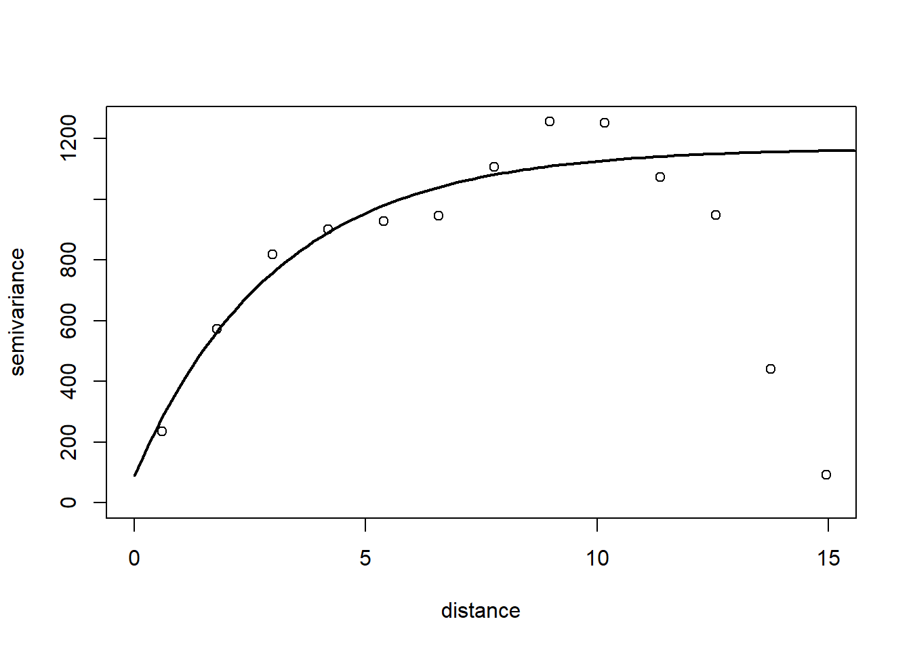
15.1.3.3 SADIE
SADIE (spatial analysis by distance indices) is an alternative to autocorrelation and semi-variance methods described previously, which has found use in plant pathology (Madden et al. 2017a; Xu and Madden 2004; Li et al. 2011). Similar to those methods, the spatial coordinates for the disease intensity (count of diseased individuals) or pathogen propagules values should be provided.
SADIE quantifies spatial pattern by calculating the minimum total distance to regularity. That is, the distance that individuals must be moved from the starting point defined by the observed counts to the end point at which there is the same number of individuals in each sampling unit. Therefore, if the data are highly aggregated, the distance to regularity will be large, but if the data are close to regular to start with, the distance to regularity will be smaller.
The null hypothesis to test is that the observed pattern is random. SADIE calculates an index of aggregation (Ia). When this is equal to 1, the pattern is random. If this is greater than 1, the pattern is aggregated. Hypothesis testing is based on the randomization procedure. The null hypothesis of randomness, with an alternative hypothesis of aggregation.
An extension was made to quantify the contribution of each sampling unit count to the observed pattern. Regions with large counts are defined as patches and regions with small counts are defined as gaps. For each sampling unit, a clustering index is calculated and can be mapped.
In R, we can use the sadie() function of the epiphy package (Gigot 2018). The function computes the different indices and probabilities based on the distance to regularity for the observed spatial pattern and a specified number of random permutations of this pattern. To run the analysis, the dataframe should have only three columns: the first two must be the x and y coordinates and the third one the observations. Let’s continue working with the simulated epidemic dataset named epi2. We can map the original data as follows:
epi2 |>
ggplot(aes(x, y, label = n, fill = n)) +
geom_tile() +
geom_text(size = 5, color = "white") +
theme_void() +
coord_fixed() +
scale_fill_gradient(low = "gray70", high = "darkred")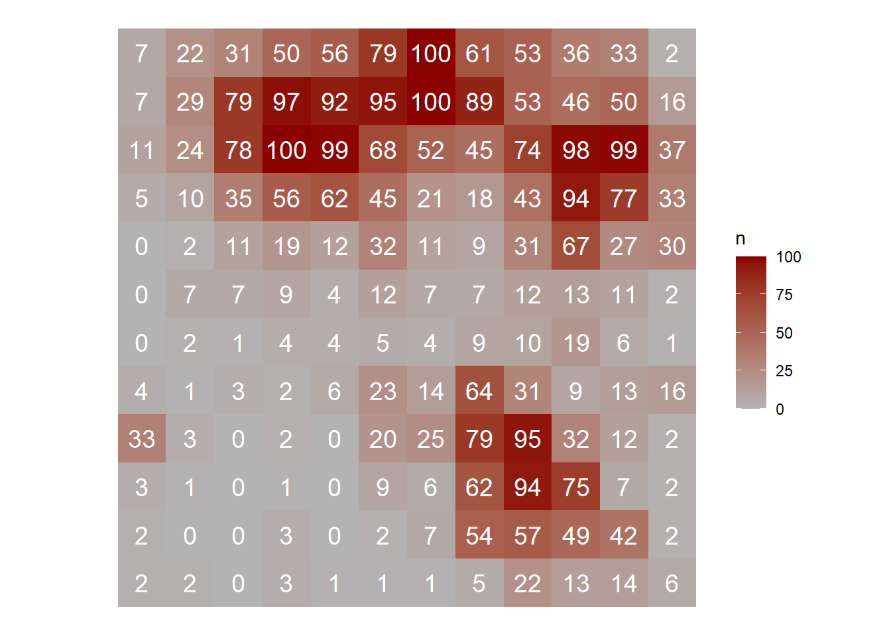
library(epiphy)
sadie_epi2 <- sadie(epi2)Computation of Perry's indices:sadie_epi2Spatial Analysis by Distance IndicEs (sadie)
Call:
sadie.data.frame(data = epi2)
Ia: 2.4622 (Pa = < 2.22e-16)The simple output shows the Ia value and associated P-value. As suggested by the low value of the P-value, the pattern is highly aggregated. The summary() function provides a more complete information such as the overall inflow and outflow measures. A dataframe with the clustering index for each sampling unit is also provided using the summary() function.
summary(sadie_epi2)
Call:
sadie.data.frame(data = epi2)
First 6 rows of clustering indices:
x y i cost_flows idx_P idx_LMX prob
1 1 1 2 -11.382725 -7.2242617 NA NA
2 1 2 2 -9.461212 -6.2258877 NA NA
3 1 3 3 -7.299482 -5.3390880 NA NA
4 1 4 33 1.000000 0.8708407 NA NA
5 1 5 4 -5.830952 -3.6534511 NA NA
6 1 6 0 -5.301329 -2.9627172 NA NA
Summary indices:
overall inflow outflow
Perry's index 2.495346 -2.811023 2.393399
Li-Madden-Xu's index NA NA NA
Main outputs:
Ia: 2.4622 (Pa = < 2.22e-16)
'Total cost': 201.6062
Number of permutations: 100The plot() function allows to map the clustering indices and so to identify regions of patches (red, outflow) and gaps (blue, inflow).
plot(sadie_epi2)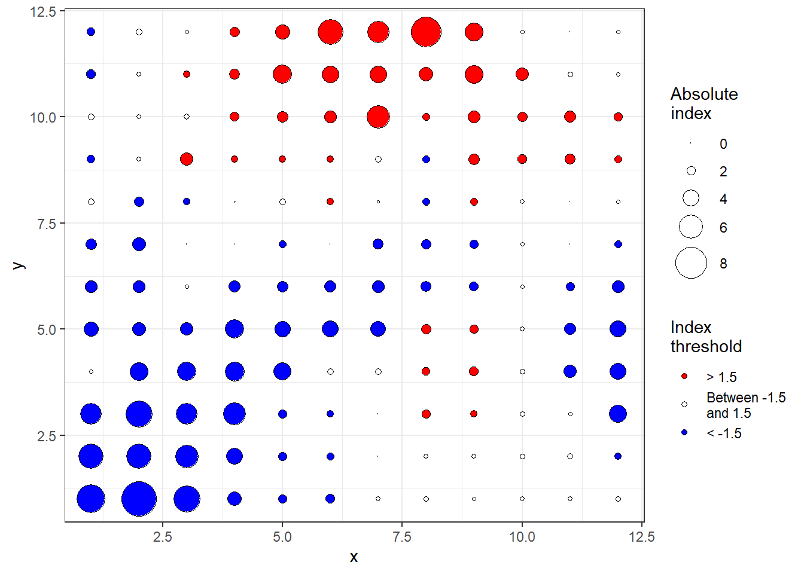
A isocline plot can be obtained by setting the isocline argument as TRUE.
plot(sadie_epi2, isoclines = TRUE)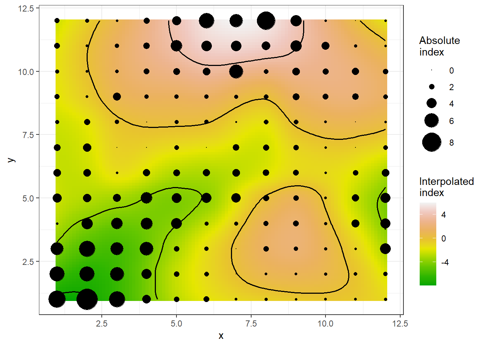
15.2 Sparsely sampled data
Different from intensively mapped data, sparsely sampled data do not contain information about the spatial location of the units, and so it is not taken into account in the analysis. The analysis of sparsely sampled data usually involves characterizing the extent of variability in the mean level of disease intensity per sampling unit (Madden et al. 2017a). There are two types of approaches to analyse these data in the context of spatial patterns of plant disease epidemics: 1) testing the goodness of fit to statistical probability distributions and 2) calculating indices of aggregation. These will be discussed further separated depending on the nature of the data, whether count or incidence (proportion), for which specific distributions are assumed to describe the data.
15.2.1 Count data
15.2.1.1 Fit to distributions
Two statistical distributions can be adopted as reference for the description of random or aggregated patterns of disease data in the form of counts of infection within sampling units. Take the count of lesions on a leaf, or the count of diseased plants on a quadrat, as an example. If the presence of a lesion/diseased plant does not increase or decrease the chance that other lesions/diseased plants will occur, the Poisson distribution describes the distribution of lesions on the leaf. Otherwise, the negative binomial provides a better description.
Let’s work with the previous simulation data of 144 quadrats with a variable count of diseased plants per quadrat (in a maximum of 100). Notice that we won’t consider the location of each quadrat as in the previous analyses of intensively mapped data. We only need the vector with the number of infected units per sampling unit.
The epiphy package provides a function called fit_two_distr(), which allows fitting these two distribution for count data. In this case, either randomness assumption (Poisson distributions) or aggregation assumption (negative binomial) are made, and then, a goodness-of-fit comparison of both distributions is performed using a log-likelihood ratio test. The function requires a dataframe created using the count() function where the number of infection units is designated as i. It won’t work with a single vector of numbers. We create the dataframe using:
data_count <- epi2 |>
mutate(i = n) |> # create i vector
epiphy::count() # create the map object of count classWe can now run the function that will look fo the the vector i. The function returns a list of four components including the outputs of the fitting process for both distribution and the result of the log-likelihood ratio test, the llr.
fit_data_count <- fit_two_distr(data_count)
summary(fit_data_count)Fitting of two distributions by maximum likelihood
for 'count' data.
Parameter estimates:
(1) Poisson (random):
Estimate Std.Err Z value Pr(>z)
lambda 27.85417 0.43981 63.333 < 2.2e-16 ***
---
Signif. codes: 0 '***' 0.001 '**' 0.01 '*' 0.05 '.' 0.1 ' ' 1
(2) Negative binomial (aggregated):
Estimate Std.Err Z value Pr(>z)
k 0.6327452 0.0707846 8.9390 < 2.2e-16 ***
mu 27.8541667 2.9510198 9.4388 < 2.2e-16 ***
prob 0.0222118 0.0033463 6.6378 3.184e-11 ***
---
Signif. codes: 0 '***' 0.001 '**' 0.01 '*' 0.05 '.' 0.1 ' ' 1fit_data_count$llrLikelihood ratio test
LogLik Df Chisq Pr(>Chisq)
random : -2654.71
aggregated : -616.51 1 4076.4 < 2.2e-16 ***
---
Signif. codes: 0 '***' 0.001 '**' 0.01 '*' 0.05 '.' 0.1 ' ' 1The very low value of the P-value of the LLR test suggest that the negative binomial provides a better fit to the data. The plot() function allows for visualizing the expected random and aggregated frequencies together with the observed frequencies. The number of breaks can be adjusted as indicated.
plot(fit_data_count, breaks = 5) 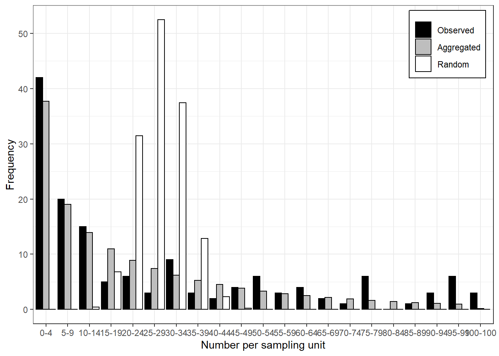
See below another way to plot by extracting the frequency data (and pivoting from wide to long format) from the generated list and using ggplot. Clearly, the negative binomial is a better description for the observed count data.
df <- fit_data_count$freq |>
pivot_longer(2:4, "pattern", "value")
df |>
ggplot(aes(category, value, fill = pattern)) +
geom_col(position = "dodge", width = 2) +
scale_fill_manual(values = c("gray70", "darkred", "steelblue")) +
theme(legend.position = "top")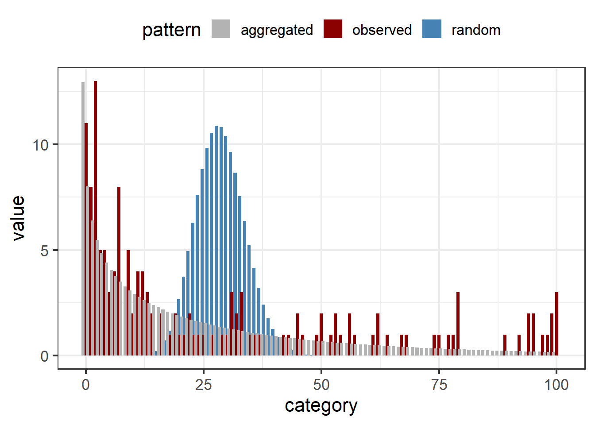
15.2.1.2 Aggregation indices
idx <- agg_index(data_count, method = "fisher")
idxFisher's index of dispersion:
(Version for count data)
34.25chisq.test(idx)
Chi-squared test for (N - 1)*index following a chi-squared
distribution (df = N - 1)
data: idx
X-squared = 4897.2, df = 143, p-value < 2.2e-16z.test(idx)
One-sample z-test
data: idx
z = 82.085, p-value < 2.2e-16
alternative hypothesis: two.sided# Lloyd index
idx_lloyd <- agg_index(data_count, method = "lloyd")
idx_lloydLloyd's index of patchiness:
2.194idx_mori <- agg_index(data_count, method = "morisita")
idx_moriMorisita's coefficient of dispersion:
(Version for count data)
2.186# Using the vegan package
library(vegan)
z <- data_count$data$i
mor <- dispindmorisita(z)
mor imor mclu muni imst pchisq
1 2.185591 1.008728 0.9922162 0.5041152 015.2.1.3 Power law
When we have a collection of count data sets at the sampling unit scale the Taylor’s power law (TPL) can be used to assess the overall degree of heterogeneity.
15.2.2 Incidence data
15.2.2.1 Fit to distributions
tas <-
read.csv(
"https://www.apsnet.org/edcenter/disimpactmngmnt/topc/EcologyAndEpidemiologyInR/SpatialAnalysis/Documents/tasmania_test_1.txt",
sep = ""
)
head(tas,10) quad group_size count
1 1 6 4
2 2 6 6
3 3 6 6
4 4 6 6
5 5 6 6
6 6 6 6
7 7 6 6
8 8 6 6
9 9 6 4
10 10 6 6# Create incidence object for epiphy
dat_tas <- tas |>
mutate(n = group_size, i = count) |>
epiphy::incidence()
## Fit to two distributions
fit_tas <- fit_two_distr(dat_tas)
summary(fit_tas)Fitting of two distributions by maximum likelihood
for 'incidence' data.
Parameter estimates:
(1) Binomial (random):
Estimate Std.Err Z value Pr(>z)
prob 0.90860 0.01494 60.819 < 2.2e-16 ***
---
Signif. codes: 0 '***' 0.001 '**' 0.01 '*' 0.05 '.' 0.1 ' ' 1
(2) Beta-binomial (aggregated):
Estimate Std.Err Z value Pr(>z)
alpha 1.923479 0.869621 2.2119 0.026976 *
beta 0.181337 0.075641 2.3973 0.016514 *
prob 0.913847 0.023139 39.4943 < 2.2e-16 ***
rho 0.322080 0.096414 3.3406 0.000836 ***
theta 0.475101 0.209789 2.2647 0.023534 *
---
Signif. codes: 0 '***' 0.001 '**' 0.01 '*' 0.05 '.' 0.1 ' ' 1fit_tas$llrLikelihood ratio test
LogLik Df Chisq Pr(>Chisq)
random : -75.061
aggregated : -57.430 1 35.263 2.88e-09 ***
---
Signif. codes: 0 '***' 0.001 '**' 0.01 '*' 0.05 '.' 0.1 ' ' 1plot(fit_tas)
15.2.2.2 Aggregation indices
glm model
binom.tas = glm(cbind(count, group_size - count) ~ 1,
family = binomial,
data = tas)
summary(binom.tas)
Call:
glm(formula = cbind(count, group_size - count) ~ 1, family = binomial,
data = tas)
Deviance Residuals:
Min 1Q Median 3Q Max
-3.447 1.073 1.073 1.073 1.073
Coefficients:
Estimate Std. Error z value Pr(>|z|)
(Intercept) 2.2967 0.1799 12.77 <2e-16 ***
---
Signif. codes: 0 '***' 0.001 '**' 0.01 '*' 0.05 '.' 0.1 ' ' 1
(Dispersion parameter for binomial family taken to be 1)
Null deviance: 117.76 on 61 degrees of freedom
Residual deviance: 117.76 on 61 degrees of freedom
AIC: 152.12
Number of Fisher Scoring iterations: 5library(performance)
check_overdispersion(binom.tas)# Overdispersion test
dispersion ratio = 2.348
Pearson's Chi-Squared = 143.206
p-value = < 0.001epiphy(c-alpha test)
library(epiphy)
tas2 <- tas |>
mutate(i = count,
n = group_size) |> # create i vector
epiphy::incidence()
t <- agg_index(tas2, flavor = "incidence")
tFisher's index of dispersion:
(Version for incidence data)
2.348calpha.test(t)
C(alpha) test
data: t
z = 7.9886, p-value = 1.365e-1515.2.2.3 Binary power law
When we have a collection of incidence data sets at the sampling unit scale the binary form of the power law can be used to assess the overall degree of heterogeneity. This spatial analysis method describes the relationship between the observed variance of diseased individuals within a data set and the corresponding variance under the assumption that the data have a random distribution distribution (i.e., Binomial for proportion data).